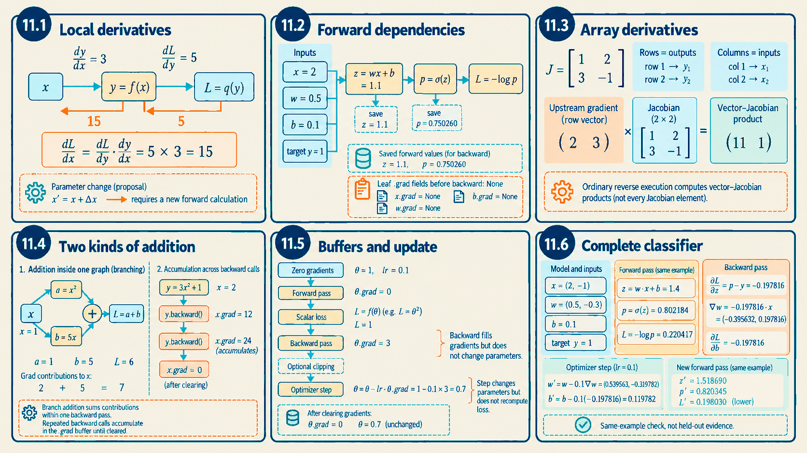
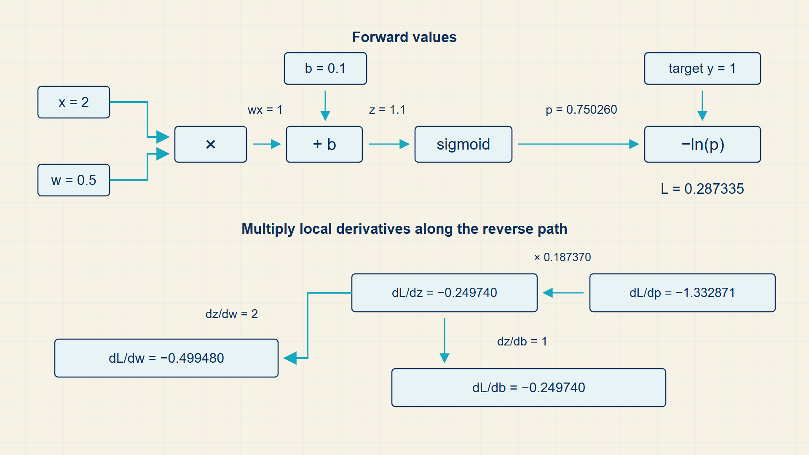
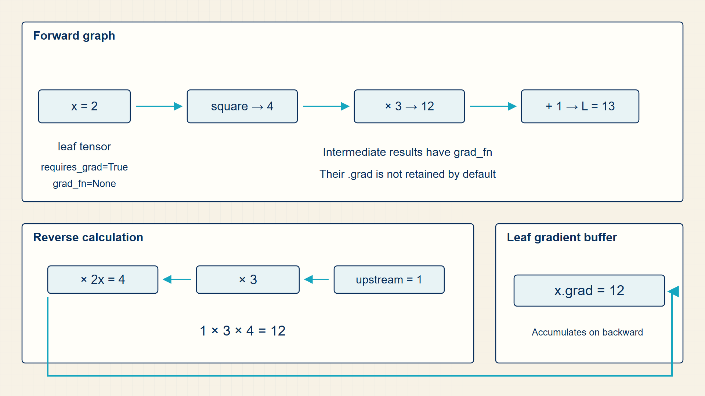

11 Backpropagation
Parameter gradients need all contributing derivative paths before an optimizer can apply a consistent update.
A parameter can affect the loss through many intermediate operations. The optimizer needs their combined sensitivity, not just the derivative of the last operation. Backpropagation applies the derivative chain rule in reverse dependency order to compute these gradients.
The local slopes and chain rule from §5.4 provide the foundation. Graphs organize longer calculations, and array derivatives account for multiple dependent coordinates. Computing a gradient and applying an optimizer step remain separate operations.

11.1 Local derivatives along a scalar path
If an input changes an intermediate value, that intermediate can change the loss. For differentiable scalar functions \(y=f(x)\) and \(L=q(y)\), the chain rule gives
\[ \frac{dL}{dx} = \frac{dL}{dy}\,\frac{dy}{dx} \tag{11.1}\]
The derivative \(dy/dx\) measures the intermediate’s response to \(x\). The factor \(dL/dy\) measures the loss response to that intermediate. Their product is the loss sensitivity to \(x\) along this path. Other independent inputs are held fixed when partial derivatives are used.
Example: Sensitivity along one path
If \(dL/dy=5\) and \(dy/dx=3\), then \(dL/dx=5(3)=15\). A small change \(\Delta x\) therefore gives approximate loss change \(15\Delta x\).
Conclusion: Both local responses contribute to the loss sensitivity. Their product gives the factor 15 relating a small input change to its approximate loss change.
Once the parameter gradient is available, §10.1’s SGD rule uses it to update the parameter. A new forward calculation checks the loss after that finite change. §11.5 distinguishes the stored gradient from the new parameter value.
Longer paths repeat the same multiplication. Software must retain both the dependencies and the values needed to evaluate those local derivatives.
11.2 Forward dependencies and saved values
The output value alone does not identify how it depends on a parameter. For example, squaring and multiplying by a constant can give the same value with different derivatives.
A computation graph records the operations and dependencies that produced a result. In a value-based drawing, nodes represent values and edges show which earlier values an operation uses. PyTorch’s automatic differentiation system records differentiable operations during forward execution when gradient tracking is enabled.1
A leaf tensor requiring gradients has no recorded operation producing it. Directly created trainable weights commonly have this role. Results of tracked operations are non-leaf tensors, with operation history accessible through grad_fn.
The following diagram shows a forward calculation and reverse derivatives. The numerical equations additionally require parameter inputs and a reference target.

For fixed scalar input \(x\), weight \(w\), bias \(b\), and the positive target \(y=1\), the calculation is
\[ z = wx+b,\quad p=\sigma(z),\quad L=-\log(p) \tag{11.2}\]
The logit \(z\) becomes probability \(p\), and the positive-target loss is \(L=-\log p\). A negative target would require \(-\log(1-p)\) instead. The graph connects \(L\) to both parameters through these intermediate values.
With \(x=2\), \(w=0.5\), and \(b=0.1\), the score is 1.1. §11.6 follows this exact scalar case through probability, loss, and parameter derivatives, including the effect of rounding.
Different derivative rules need different saved information. Multiplication may need its operands, while sigmoid’s derivative can use its output. Autograd saves the data required by the backward rules, not necessarily every intermediate tensor forever.
Setting requires_grad=True requests gradient tracking for a tensor. It does not add that tensor to an optimizer’s parameter list. torch.no_grad() disables recording of operations in its context, which is useful for ordinary parameter updates. Detaching an intermediate removes its earlier path from the differentiated computation. In-place changes to saved operands can invalidate the backward calculation.
Saved graph data and .grad buffers serve different purposes. The first supports derivative computation. The second stores accumulated derivatives on selected tensors. Non-leaf gradients can be used during propagation without being retained in .grad afterward.
11.3 Array derivatives and vector-Jacobian products
An array operation can have many input-output dependencies, yet training usually needs the gradient of one scalar loss. Constructing every derivative entry explicitly would often waste memory and work.
For input \(x\in\mathbb R^n\) and output \(y\in\mathbb R^m\), the Jacobian is the \(m\)-by-\(n\) matrix
\[ J_{i,j}=\frac{\partial y_{i}}{\partial x_{j}} \tag{11.3}\]
Row \(i\) enumerates output \(y_i\) and column \(j\) enumerates input \(x_j\). The upstream gradient supplies the loss sensitivities to the outputs, calculated through operations that occur later in the forward calculation.
Using a row-gradient convention, \(dL/dy\) has shape \([1,m]\). Its vector-Jacobian product has shape \([1,n]\):
\[ \frac{dL}{dx} = \frac{dL}{dy}\,J_{y,x} \tag{11.4}\]
Writing \(J\) for \(J_{y,x}\) shortens the notation without changing the vector-Jacobian product. Each input coordinate receives a contribution from every output that depends on it:
\[ \frac{\partial L}{\partial x_{j}}=\sum_{i}\frac{\partial L}{\partial y_{i}}\,\frac{\partial y_{i}}{\partial x_{j}} \tag{11.5}\]
Here \(i\) runs over the \(m\) outputs and \(j\) selects one input. The multiplication expresses these sums. An implementation can compute the product directly without materializing the full Jacobian.
Example: Two output contributions to one input
For \(y=(x_1+2x_2,3x_1-x_2)\), the Jacobian is \(J=\begin{bmatrix}1&2\\3&-1\end{bmatrix}\). With upstream gradient \((2,3)\), the input gradient is \((2,3)J=(11,1)\).
The first coordinate receives \(2(1)+3(3)=2+9=11\). The second receives \(2(2)+3(-1)=4-3=1\).
In a separate diagonal example, \(J=\operatorname{diag}(1,4)\) and upstream gradient \((2,3)\) give \((2,12)\).
Conclusion: Output sensitivities weight the Jacobian’s rows. Adding their contributions gives one derivative per input coordinate, with the declared output-by-input orientation.
A column-gradient convention would use \(J^{\top}\) times the upstream column. It describes the same calculation with transposed notation. For a nonscalar output, backward needs these upstream weights to specify the combination being differentiated.
11.4 Path sums and repeated backward calls
A shared input can feed several branches of a graph. Its loss sensitivity must include every branch. Within one backward pass, reverse differentiation multiplies local derivatives along paths and adds their contributions:
\[ \nabla_x L=\sum_{\text{paths }p}\operatorname{contribution}_{p} \tag{11.6}\]
The index \(p\) enumerates paths from the shared value \(x\) to the scalar loss. A path contribution is the product of its local derivatives, using the scalar chain rule from §11.1 on each edge. For a concrete branched graph, set \(a=x^2\), \(b=5x\), and \(L=a+b\). At \(x=1\), the forward values are \(a=1\), \(b=5\), and \(L=6\). The first branch contributes \((dL/da)(da/dx)=1(2x)=2\). The second contributes \((dL/db)(db/dx)=1(5)=5\). Their sum gives \(dL/dx=7\), agreeing with direct differentiation of \(x^2+5x\). Addition combines branches, while multiplication connects successive operations.
Gradient accumulation also occurs across backward calls because leaf .grad buffers retain their values. This storage behavior is distinct from adding branches inside one derivative calculation.
Ordinary backward normally frees saved graph data after using it. Calling backward again on the same graph can therefore fail. A fresh forward calculation constructs a new graph, but it does not clear the leaf’s existing gradient. Deliberate graph retention is another option when the same graph must be differentiated again, with an additional memory cost.
The runnable PyTorch example uses a one-element tensor x with value 2. It first computes y with value 13, then differentiates \(y=3x^2+1\) to obtain \(6x=12\).
Code example: Fresh forward graphs accumulate into the same leaf gradient buffer
import torch
x = torch.tensor([2.0], requires_grad=True)
y = 3 * x ** 2 + 1
y.backward()
print(x.grad) # tensor([12.]), since the derivative is 6x
y = 3 * x ** 2 + 1 # A fresh graph, with the same leaf x.
y.backward()
print(x.grad) # tensor([24.]), because its gradient was not cleared.The two printouts are tensor([12.]) and tensor([24.]). Recomputing y permits the second backward pass. Since x.grad was not cleared, the second derivative adds another 12. The tensor shape is [1], not scalar shape [].
A backward call without an explicit upstream gradient is valid for a result containing one element. For multiple elements, the caller supplies the upstream weights described in §11.3. Calling retain_grad() on a non-leaf tensor requests its .grad buffer for inspection. It is not required merely to propagate through that tensor.
Rumelhart, Hinton, and Williams helped popularize backpropagation for learning internal representations in neural networks.2
Backpropagation changes gradient buffers, not the parameter values. The optimizer performs the parameter update afterward.
11.5 Parameters, gradient buffers, and optimizer state
After backward, a parameter can have a new gradient while retaining exactly its old value. An optimizer step reads that gradient and any stored update state to change the parameter.
One independent batch cycle has the following order:
optimizer.zero_grad()clears the tracked parameters’ previous gradients. The API can set them toNoneor fill existing buffers with zeros.- The forward calculation uses the current parameters to produce predictions and a scalar loss.
loss.backward()adds derivatives to the relevant leaf gradient buffers. A parameter unused by the graph need not receive a gradient.- Optional clipping modifies the completed gradients.
optimizer.step()then updates its parameter list using those buffers and any momentum or Adam state.
The next forward calculation uses the changed parameters. The previously calculated loss still describes the old version. The step does not compute a new loss, calculate missing derivatives, or automatically clear gradients.
For the scalar SGD case \(\theta=1\), gradient 3, and rate 0.1, backward stores 3 while leaving \(\theta=1\). The step changes \(\theta\) to 0.7. Resetting .grad afterward leaves 0.7 intact. With Adam, resetting .grad likewise preserves the moment values used by the next step.
Intentional accumulation can combine several batches before an update. The loss scaling must match the intended sum or mean, especially when batch sizes differ. Accidental accumulation changes the gradient the optimizer consumes.
The supporting gradient notebook connects these operations to a manual logistic training loop. Its repeated training experiment is separate from the bounded calculations below.
11.6 A complete classifier calculation and update
A classifier update can be checked by following the same input, target, and parameter version through prediction, loss, gradients, and the new prediction. Local derivatives must agree with the forward values. A batch mean must divide every parameter-gradient sum by the same example count. The calculations here connect the affine map from Chapter 5, probabilities from Chapter 6, and binary cross-entropy from Chapter 8.
The single-example calculation uses a feature vector \(x\), weights \(w\) of the same width, scalar bias \(b\), and target \(y\in\{0,1\}\). It applies §5.2’s affine score, §6.1’s sigmoid, and §8.1’s binary cross-entropy in that order. The update examples below follow these formulas at the original parameters and recompute the loss after changing them.
The logarithms are natural, so the loss is measured in nats. For target \(y=1\), the binary loss is \(-\log p\). For target \(y=0\), it is \(-\log(1-p)\). The loss compares the reference class with the whole probability calculation rather than with a thresholded prediction. §8.4’s composition derivative gives \(\partial L/\partial z=p-y\). The remaining local derivatives follow the affine map:
\[ \frac{dL}{dw}=\frac{dL}{dz}\,\frac{dz}{dw} \tag{11.7}\]
\[ \frac{dz}{dw}=x \tag{11.8}\]
In the scalar equation, \(x\) is held fixed when differentiating with respect to \(w\). For a feature vector, coordinate \(j\) instead gives \(\partial z/\partial w_j=x_j\). The bias derivative is 1, so its loss gradient is also \(p-y\).
Example: One two-feature logistic update
Let \(x=(2,-1)\), \(w=(0.5,-0.3)\), \(b=0.1\), and \(y=1\). These are the classification weights for this example, separate from the regression weights used for squared error in §5.4.
The score is \(z=2(0.5)+(-1)(-0.3)+0.1=1.4\). The exponential \(\exp(-1.4)\approx0.246596964\) rounds to 0.247. Retaining its precision gives probability \(p=1/(1+\exp(-1.4))\approx0.8021838886\). The positive-label loss is \(L=-\log p\approx0.2204174099\). At three decimals, the probability and loss are 0.802 and 0.220.
The logit derivative is \(p-y\approx-0.1978161114\). Multiplication by the feature coordinates gives the weight gradient \((-0.3956322229,0.1978161114)\). The bias gradient is \(-0.1978161114\).
With learning rate \(\eta=0.1\), subtracting those gradients gives \(w'\approx(0.5395632223,-0.3197816111)\) and \(b'\approx0.1197816111\). On the same input, \(z'\approx1.5186896669\) and the recomputed loss is approximately 0.1980297514.
Conclusion: This step raises the score of the positive example and lowers its loss from about 0.220417 to 0.198030. All update values come from the original parameter version. Recomputing the loss verifies this finite step. It does not establish convergence or improvement on other examples.
The sign of \(p-y\) explains the direction. For the separate case \(p=0.95\) and \(y=0\), the logit derivative is 0.95, so a small descent change lowers the logit, moves \(p\) toward 0, and lowers the loss. When \(p\) is close to the target, this derivative is small. For parameter updates, multiplying the logit derivative by each input coordinate gives the corresponding weight derivative.
The following figure shows how recorded forward operations connect the scalar loss to parameter gradients.

The graph supplies the dependencies for reverse differentiation. §11.5 distinguishes that calculation from storing, clearing, and applying gradients. Each parameter’s .grad buffer has the same shape as that parameter.
Example: Local derivatives in the scalar graph
In the separate scalar case, \(x=2\), \(w=0.5\), \(b=0.1\), and \(y=1\). The multiplication node gives \(z_{\mathrm{mul}}=2(0.5)=1.0\). Adding the bias gives \(z=1.1\). The probability is approximately 0.750260106 and the unrounded positive-label loss approximately 0.287335325.
At these values, \(dL/dp=-1/p\approx-1.332871084\) and \(dp/dz=p(1-p)\approx0.187369880\). Their product is \(dL/dz=p-1\approx-0.249739894\). The affine derivatives are \(dz/dw=2\) and \(dz/db=1\), giving \(dL/dw\approx-0.499479789\) and \(dL/db\approx-0.249739894\).
Rounding \(p\) to 0.750 before taking its logarithm would instead give \(-\log(0.750)\approx0.287682\), displayed as 0.288. Retaining precision through the calculation gives a final loss of 0.287 at three decimals. The intermediate products above use the unrounded probability.
Conclusion: Multiplying the local derivatives recovers the same logit derivative as \(p-y\). The graph explains where each factor comes from. Premature rounding explains why a calculation using 0.750 can display a different final third decimal.
For the running batch, let \(X\) have shape \([B,F]\), \(w\) shape \([F]\), and \(b\) be scalar. Then \(z=Xw+b\), probabilities \(p\), and labels \(y\) all have shape \([B]\). Using the mean binary loss gives logit sensitivities \((p-y)/B\). Consequently, the weight gradient is \(X^{\top}(p-y)/B\) and the bias gradient is \(\sum_i(p_i-y_i)/B\). The transpose sums contributions from every row to the shared feature weights.
Example: One update of the running batch
The running-batch loss in §8.3 uses \(X=[[1,0],[0,1],[1,1]]\), targets \(y=[1,0,1]\), weights \(w=[0.8,-0.3]\), and bias \(b=0.1\). That section calculated probabilities \(p\approx[0.710949503,0.450166003,0.645656306]\) and mean loss 0.458926898 at this parameter version. This example calculates how the mean loss changes the shared parameters.
Before division by three, \(p-y\approx[-0.289050497,0.450166003,-0.354343694]\). The first weight receives contributions from rows 1 and 3, giving \((-0.289050497-0.354343694)/3\approx-0.214464730\). The second receives rows 2 and 3, giving \((0.450166003-0.354343694)/3\approx0.031940770\). All rows contribute to the bias, whose mean gradient is approximately \(-0.064409396\).
A rate of 0.1 gives \(w'\approx[0.821446473,-0.303194077]\) and \(b'\approx0.106440940\). Repeating the forward and mean-loss calculations at these updated parameters gives mean loss approximately 0.453860669.
Conclusion: The shared weights combine evidence from all three rows. Row 2 contributes against the other rows to the bias update, and averaging keeps the update consistent with the mean objective. This checked batch step reduces that objective from about 0.458927 to 0.453861, without a claim about held-out quality.
The runnable PyTorch code below executes this same three-row mean-loss update with torch.optim.SGD. Its learning rate is 0.1 and momentum is disabled. The printed loss is approximately 0.458927, followed by the updated weights and bias calculated above.
Code example: One optimizer step on the running logistic-regression batch
import torch
import torch.nn.functional as F
X = torch.tensor([[1.0, 0.0], [0.0, 1.0], [1.0, 1.0]])
y = torch.tensor([1.0, 0.0, 1.0])
w = torch.tensor([0.8, -0.3], requires_grad=True)
b = torch.tensor(0.1, requires_grad=True)
optimizer = torch.optim.SGD([w, b], lr=0.1)
optimizer.zero_grad()
loss = F.binary_cross_entropy_with_logits(X @ w + b, y)
loss.backward()
optimizer.step()
print(loss.item(), w.detach(), b.detach())The printed loss belongs to the pre-update forward calculation. step() changes the parameters but does not recalculate that stored value. This agrees with the hand calculation.
The examples use §10.1’s SGD update, with learning rate \(\mathrm{lr}=\eta\) and a gradient evaluated before the parameter changes. In PyTorch, nn.Linear(D, 1) can store the affine parameters, and BCEWithLogitsLoss or binary_cross_entropy_with_logits receives raw logits for a stable forward loss. The logits and target labels must have matching shapes, for example both [B] after removing the logits’ final singleton axis. The mean loss is scalar. A decision based on logits > 0 matches sigmoid(logits) > 0.5, but this threshold is not part of the differentiable training loss.
The backward, update, and reset cycle in §11.5 also applies to a manual update. The subtraction below runs inside torch.no_grad() so that update arithmetic is not recorded as part of the training graph.
The following runnable PyTorch example checks a separate random batch with 32 rows and four features. It is distinct from the supplied scalar and three-row calculations above. The target and logit shapes are both [32,1]. The weight shape is [4,1], the bias shape is [1], and the default mean loss has scalar shape [].
Code example: A minimal binary logistic regression step
import torch
X = torch.randn(32, 4)
y = torch.randint(0, 2, (32, 1)).float()
w = torch.randn(4, 1, requires_grad=True)
b = torch.zeros(1, requires_grad=True)
logits = X @ w + b
loss = torch.nn.functional.binary_cross_entropy_with_logits(logits, y)
loss.backward()
with torch.no_grad():
w -= 0.1 * w.grad
b -= 0.1 * b.grad
w.grad.zero_(); b.grad.zero_()loss.backward() accumulates a [4,1] weight gradient and a [1] bias gradient. The block under torch.no_grad() subtracts 0.1 times each gradient from its parameter, then zeros both gradient buffers. It keeps the random inputs and labels unchanged. The stored loss still describes the old forward pass. Checking loss after the update requires a new forward calculation with the changed parameters.
This snippet has no explicit seed or printed output. Its random values vary between runs. After the final line, the parameters have changed and both allocated gradient buffers contain zeros. The code completes one forward, backward, update, and reset cycle on that random batch.
For a more general affine layer, §5.3 establishes the relation between the mathematical weight matrix and the orientation stored by nn.Linear. Backpropagation preserves the stored parameter shape: a stored weight with shape \([D_{\mathrm{out}},F]\) receives .grad with shape \([D_{\mathrm{out}},F]\). A scalar reduced loss has shape []. Intermediate tensors carry operation history when tracking is enabled, although their gradients need not be retained in .grad after propagation.
Saving or recomputing intermediate activations costs memory and work. Small calculations can spend much of their time on interpreter or data-transfer overhead, while larger matrix operations may dominate other workloads. Measuring those costs requires an execution boundary and hardware context. The arithmetic alone does not establish a bottleneck.
Correct differentiation cannot add relationships that the model has no way to represent. An affine boundary still cannot separate every target pattern. Chapter 12 uses nonlinear transformations to address that limitation.
Chapter checkpoint
If the running batch used summed loss instead of mean loss, how would its gradients change? Would one lower training loss establish generalization?
Answer: With three examples, the sum’s parameter gradients are three times the mean’s gradients. At the same learning rate the proposed step would therefore be three times as large, so the checked mean-loss update cannot be reused unchanged. A lower loss on this batch establishes only that local result. Separate representative examples are needed to assess generalization.
Two branches connect a parameter to the loss. Their path contributions are 3 and -1. What gradient is computed for the parameter? If backward() is then called again without clearing its .grad buffer and contributes 2, what value is stored?
Answer: The branches add, so the first backward pass contributes 2. Gradient buffers accumulate across backward calls, so the second contribution raises the stored value to 4. Clearing the buffer and changing the parameter are separate operations.
PyTorch Contributors. (2026). Autograd mechanics. PyTorch 2.12 documentation.↩︎
Rumelhart, D. E., Hinton, G. E., & Williams, R. J. (1986). Learning representations by back-propagating errors. Nature, 323, 533–536.↩︎